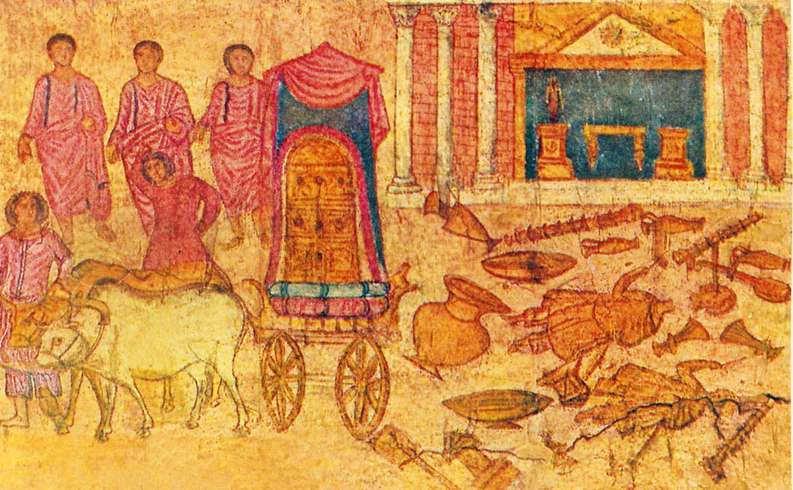

1 Samuel 5 — The Mister Translation

One of the oldest surviving paintings of a biblical scene, from the wall of a synagogue on the Euphrates. It joins this chapter to the next: on the right the temple of Dagon at Ashdod with its images broken on the ground, on the left the ark leaving on the cart drawn by two milk cows (1 Samuel 6:7).

Translator's Notes — verse by verse
Beside Dagon. The Philistines carry the ark from Eben-ezer to Ashdod and set it “beside Dagon” in his house, a trophy laid before the god who had given them the victory, as the Philistine lords once rejoiced that “our god has given into our hand Samson our enemy” (Judges 16:23, now on these pages). The Philistines had said “God has come into the camp” (1 Samuel 4:7, now on these pages); now he has come into Dagon’s house.
“Fallen on his face.” Next morning “Dagon had fallen on his face to the ground before the ark of Jehovah”: the posture of a worshipper before his lord. Josephus says the Ashdodites kept finding him “in the posture of one worshipping the ark” (Antiquities 6.2, numbered 6.1.1 in Whiston). They set him back up. The second morning he is down again, and “the head of Dagon and both the palms of his hands lay cut off on the threshold”. The verb for his fall is naphal, the verb of Eli’s fall from his seat the day before (1 Samuel 4:18, now on these pages). The ASV has “Dagon was fallen upon his face to the ground before the ark of Jehovah”.
“Only Dagon’s trunk.” The Hebrew ends the verse with “only Dagon was left to him”: the name, with no noun. Translators supply one. The ASV and KJV have “only the stump of Dagon was left to him”; the Greek “only the back of Dagon was left”; the NWT 1984 “Only the fish part had been left upon him”, reading the name as if from dag, “fish”. That fish-bodied Dagon is an old explanation, reported from the medieval commentator David Kimhi; the name is more often connected with dagan, “grain”, and nothing in this chapter describes the statue’s shape. This translation has “only Dagon’s trunk”, with the Hebrew in this note.
The threshold. “That is why the priests of Dagon … do not tread on the threshold of Dagon in Ashdod, to this day.” The Greek adds “for they leap over it”, and Zephaniah threatens “everyone who leaps over the threshold” (Zephaniah 1:9, now on these pages); the word with the article, “the threshold”, stands in two verses of the Hebrew Bible, here and there. The NWT 1984 has “do not tread upon the threshold of Dagon in Ashdod down to this day”.
A heavy hand. “The hand of Jehovah was heavy on the people of Ashdod, and he devastated them.” Heavy is kaved again, the word of Eli’s weight and of the glory that went into exile (1 Samuel 4:21, now on these pages): the glory has left Israel and lands on Ashdod. It is the word of the plague on Egypt’s livestock, “a very heavy pestilence” under “the hand of Jehovah” (Exodus 9:3, now on these pages), and the Philistines who remembered Egypt’s plagues in the last chapter now have one of their own (1 Samuel 4:8). The ASV has “the hand of Jehovah was heavy upon them of Ashdod, and he destroyed them”; the NWT 1984 “he began causing panic”.
Tumours. The written text has ’ofalim, “swellings”, the letters of Ophel, a mound; the margin reads teḥorim, usually taken as a gentler word for the same thing. The same pair stands in the curse of the law, “Jehovah will strike you with the boil of Egypt and with the tumours” (Deuteronomy 28:27, now on these pages). The written word stands in four verses of the Hebrew Bible: that curse, and three times in this chapter. The ASV has “smote them with tumors”; the KJV “smote them with emerods”, an old English word for haemorrhoids; the NWT 1984 “striking them with piles”.
The Greek’s mice. The Greek has him strike them “in their seats” (vv. 3, 9), and at verse 6 adds “and in the midst of their land mice sprang up, and there was a great confusion of death in the city”; the Douay, from the Latin, has the mice too, “there came forth a multitude of mice”. The Hebrew has no mice until the next chapter, where the Philistines send back “five golden mice” with the ark (1 Samuel 6:4, now on these pages). Josephus calls the disease dysentery, and adds the mice that “spared neither the plants nor the fruits” (Antiquities 6.3). The Ashdodites draw their own conclusion: “his hand is hard on us and on Dagon our god”.
The lords of the Philistines. Ashdod calls “all the lords of the Philistines”, the seranim of the five cities, the title of the men who paid Delilah (Judges 16:5) and that Joshua 13:3 lists by city, “the Gazite, and the Ashdodite, the Ashkelonite, the Gittite, and the Ekronite” (Joshua 13:3, both now on these pages). Their answer is to pass the problem along: “Let the ark of the God of Israel be moved around to Gath.” The verb sabab, “go around”, comes three times in two verses. The ASV has “Let the ark of the God of Israel be carried about unto Gath”; the NWT 1984 calls the lords “the axis lords of the Philistines”.
“A very great panic.” In Gath “the hand of Jehovah was against the city — a very great panic”: the mehumah the law promised against Israel’s enemies, “Jehovah your God will … throw them into a great panic” (Deuteronomy 7:23, now on these pages); “a great panic” stands in three verses of the Hebrew Bible, that one, this one, and Saul’s battle at Michmash (1 Samuel 14:20). It strikes “from small to great, and tumours broke out on them”; the verb for “broke out” stands in one verse of the Hebrew Bible, and its sense is guessed from this verse alone. The ASV has “tumors brake out upon them”; the KJV adds “in their secret parts”.
“To kill me and my people.” When the ark reaches Ekron the whole city cries out in the singular: “They have moved the ark of the God of Israel around to me, to kill me and my people!” The Greek sends it to Ascalon instead, and Josephus agrees and says the ark went round all five cities (Antiquities 6.4–6, numbered 6.1.1 in Whiston). The lords are summoned again: “Send away the ark … and let it go back to its place.” “A deadly panic”, mehumat mavet, stands in one verse of the Hebrew Bible; “the hand of God was very heavy there”. The NWT 1984 keeps the singular, “may not put me and my people to death”.
The cry of the city. “And the men who did not die were struck with tumours; and the cry of the city went up to the heavens.” The words are those of Israel in Egypt, “their cry for help went up to God from the bondage” (Exodus 2:23, now on these pages): now it is a Philistine city crying under the hand that once struck Egypt. The ASV has “the cry of the city went up to heaven”; the NWT 1984 “the cry of the city for help kept ascending to the heavens”.
Patterns worth carrying forward
Where this translation keeps the words exact and distinct: “fallen on his face” for nofel le-fanav, the posture of worship; “only Dagon’s trunk”, with the Hebrew’s bare “only Dagon” in the note; “the threshold” for miftan; “heavy” for kaved, as in 4:18 and Exodus 9:3; “tumours” for ’ofalim / teḥorim, as in Deuteronomy 28:27; “the lords of the Philistines” for seranim, as in Judges 16; “moved around” for sabab; “a very great panic” for mehumah gedolah, as in Deuteronomy 7:23; and “the cry … went up”, as in Exodus 2:23.
Echoes paid. “God has come into the camp” (4:7) becomes God in Dagon’s house; the Philistines who spoke of the plagues of Egypt (4:8) suffer one; Eli’s fall (4:18) is matched by Dagon’s; and the “heavy” glory that left Israel (4:18–21) lies heavy on Ashdod.
Echoes planted. The golden tumours and golden mice of 1 Samuel 6, now on these pages, and the panic of Michmash in 1 Samuel 14:20.
Next in this book: 1 Samuel 6 — after seven months the Philistines ask their priests what to do; they send the ark back on a new cart drawn by two milk cows, with five golden tumours and five golden mice, and the cows take the straight road to Beth-shemesh.